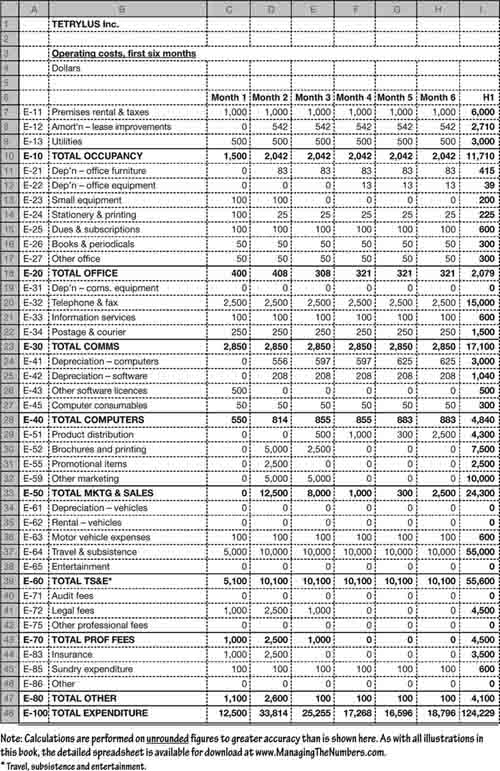

Non-employee costs
Other costs, those not associated with employees, are generally fairly simple to analyse and project. Figure 12.3 lists over 50 categories of operating costs. You probably will not use all of these, but there may be other categories specific to your business.
| (Read down under each heading.) | ||
| Marketing & sales | Occupancy | Office |
| Delivery, shipping, etc. | Dep’n, lease/f’hold improvements | Depreciation, furniture |
| Brochures and printing | Premises rental & taxes | Depreciation, equipment |
| Advertising | Heating and air-conditioning | Leased furniture |
| Direct mail | Electricity | Small equipment purchases |
| Exhibitions, seminars, etc. | Water | Stationery & printing |
| Promotional items & events | Security | Dues & subscriptions |
| PR, charities, community | Building repairs & maintenance | Books & periodicals |
| Other marketing & sales | Other occupancy | Other office |
| Communications | Computers | Travel & subsistence |
| Depreciation, telecoms | Depreciation, computers | Depreciation, vehicles |
| Telephone & fax | Leased hardware | Motor vehicle rental |
| Information services | Software licences | Motor vehicle expenses |
| Postage & courier | Software maintenance | Travel & subsistence |
| Messengerial | Computer consumables | Entertainment |
| Other communications | Other IT | Other TS&E |
| Professional fees | Other fees & costs | Other adjustments |
| Accounting fees | Insurance | Amortization, start-up costs |
| Audit fees | Bank charges | P&L on disposal of assets |
| Legal fees | Relocation costs | Bad debts & provisions |
| Other professional fees | Sundry expenditure | Contingency |
| PR = public relations, | ||
| TS&E = travel, subsistence and entertainment. | ||
Again, it is a case of working through the categories and examining the amounts in question. Figure 12.4 shows one way of classifying operating costs. Again, this might be for a function, geographic area, or the business as a whole. As before, you will probably want to duplicate this table and replace money amounts with percentages (of the totals) so you can get a better feel for where the money goes. Pie charts and stacked column charts can help you to visualize this. As with employee costs, when reviewing and projecting financials for a business as a whole, you will require one table for cost of sales and another for other costs.
Fig 12.4. Operating costs detailed
Note that you do not include capital spending here – only depreciation for the period under consideration (see previous chapter).
Non-employee costs in the future
As with employee costs, other costs are easy to project once you have determined your business needs. Start with a spreadsheet similar to Fig. 12.4 and work through it one row at a time. The projections will be based on logic.
Take a simple example. Suppose that you estimate that you will spend approximately $500 on stationery each month. Should you just enter $500 for each month? Or should you work out exactly what will be purchased in which months and arrive at a projection such as 534 for January, 405 in February, and so on? The answer is self-evident when you apply cost-benefit logic. How much work is required to arrive at the estimates – compared to the usefulness of the results? How large are the amounts in relation to the overall plan? What is the importance of capturing any erratic patterns?
For example, if you know that total expenditure will be tens of thousands of dollars a month and spending on fuel will vary by around $50 a month you can safely use the same amount for each month (the projected annual spend divided by 12). It would be pointless to spend a day trying to achieve an exact projection. On the other hand, if you expected outlays on fuel to vary by 50% a month you should use a closer projection for each month.
Depreciation revisited
When you built up your capital spending plans you created a depreciation schedule. This gives you several ready-made entries for your cost tables. Just pull the depreciation figures into the production and operating cost spreadsheets. For example, leasehold improvements in the operating costs shown in Fig. 12.4 (line E-12) are copied directly from the depreciation schedule shown in Fig. 11.5 (line D-11). As you can see, the work you do early-on feeds into the later tasks. Forecasting becomes easier and easier as you progress.
Precision projections
At this point, you might be saying that it is all very well for me to ask you to project costs, but more difficult for you to do. Well, in fact, there are some handy rules of thumb that you can apply. The obvious one – I hardly like to mention this – is to assess spending for the year and divide by 12. Other techniques are as follows:
More of the same. Sometimes, perhaps all too infrequently, you can take last year’s spending, or perhaps the most-recent known monthly amount, and extend it (unaltered) into the future. This works well for lease contracts without escalation clauses and other spending where there is no seasonality or inflation. There may be predetermined step changes when, for example, an escalation clause in a lease contract kicks in.
Fixed relationships. Sometimes, one row has a simple proportional relationship to another. Rental contracts for office premises occasionally cover rent, heating or air conditioning, and water – each charged at a fixed rate per square foot or metre of floor area. Aside from allowing for an annual rent review, each of these rows in the forecast is calculated in the spreadsheet as ‘office area in square metres × rate-per-square-metre’. You can often calculate costs in relation to employee headcount. Might it be logical to project costs of computer printout paper at some fixed multiple of the number of accountants that you have?
Steady rates of change. When any alternative rational is absent, it may be legitimate to assume a steadily increasing (or, more rarely, decreasing) pattern, such as a 1% a month increase. Do not forget that this compounds. For example, a 1% increase each month is equivalent to 12.7% a year, not 12%.
Seasonal pattern. There might be a seasonal pattern that you can rely on. For example, you might project annual heating and air conditioning costs, and then allocate them among the months according to some observed pattern (11.0% of the annual total in January, 9.5% in February, 8.3% in March, and so on).
Seasonal with steady change. The effects of a steady rate of change and a seasonal pattern can be combined. A quick fix is to take a fixed change (i.e. + 10%) over the same month a year earlier.
|
Careful
When you are reviewing financials produced by others, watch for cheating. Figure 12.5 lists some tricks used – and watched for – by wily old dogs. More detailed examples include:
Inventory valuation: such as using LIFO (last-in first-out) valuation where acquisition costs are falling in a high-tech business, to boost profits and minimize inventory shown on the balance sheet (see Chapter 13).
Depreciation, amortization and depletion were discussed in Chapter 11. Stretching the life of that new computer to ten years will make operating costs look much lower this year. Similar tricks can be played with other accruals accounting techniques, including capitalizing costs: we won’t charge R&D outlays to the expenditure account, we will put them on the balance sheet as an asset.
Leasing was also touched on in Chapter 11. Other off-balance sheet liabilities are considered in Chapter 15. It is not unknown for companies to sell their inventories with an undertaking to buy them back when they are needed – creating cash in the bank and a hidden liability.
Provisions for future payments to employees (such as pensions, redundancy and terminations pay) and bad debts are often covered by statutory regulations. Remember though that no money changes hands when the provisions are created by stroke of the bookkeeping pen – and when they are disbursed there is no entry on the profit and loss account.
Sub-contracting work or paying service fees can shift money from one business to some other favoured firm. Moreover, since accounts show only payments actually incurred, outsourcing increases costs. The third party’s fee will include a profit that would have been a saving if you had done it yourself. You cannot show savings in the profit and loss account – only actual spending.
Finally, timing errors can build a useful cash reserve. Getting the seasonal pattern wrong was discussed a couple of pages back. Accruals accounting is another way that this can be achieved – an entry goes in the cash flow as a cost early on but, oops, it turns out that the cost can be treated as an accrued cost for a few months.
| (Read downwards.) | |
| Where no money changes hands | |
| 1 | Inventory valuation |
| 2 | Depreciation |
| 3 | Amortization |
| 4 | Depletion |
| 5 | Provisions for payments to employees (e.g. termination costs) |
| 6 | Provision for bad debts |
| 7 | Contingency reserve |
| With identifiable spending | |
| 8 | Capitalizing costs (R&D, interest on projects, etc.) |
| 9 | Leasing |
| 10 | Inflating or skimping on maintenance and repairs |
| 11 | Discretionary bonuses |
| 12 | Sub-contracting |
| 13 | Service fees |
| 14 | Timing errors |
|